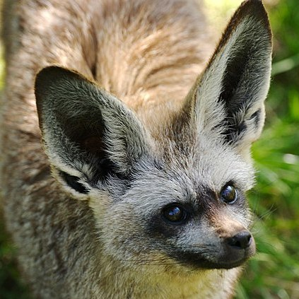

Thinking Outside The Fox
Bat-Eared Fox
Bat-Eared Foxes generally have a gray color with a sand tint to it. This color fades to a darker version around the face, ears, back, and tail. They are relatively small, usually standing at about 2 feet long and 1 foot high. They generally stay in large packs in numbers of about 50 or more. This breed is found in both east and south Africa. Similar to the Fennec Fox this breed is known for storing many blood vessels in the ears to deal with the harsh desert environment.
These foxes, while not so different from the other breeds discussed, are not as commonly kept as pets. They require a lot of room to roam similar to the Red and Silver fox, and can be quite curious. Their African habitat can make them interesting to have as a pet, as most other places are quite different from their natural home. That being said, there are many instances of people having them as pets under the right care.